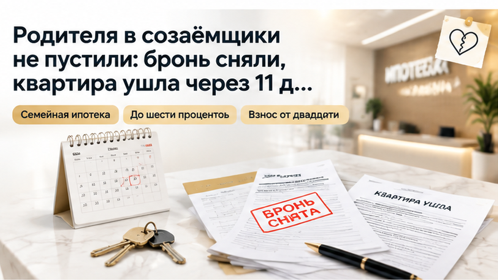
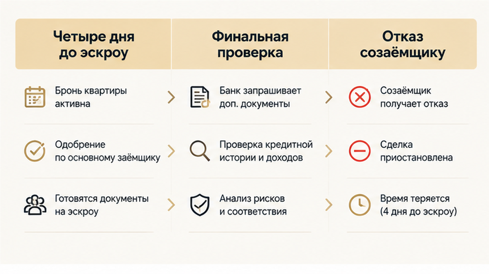
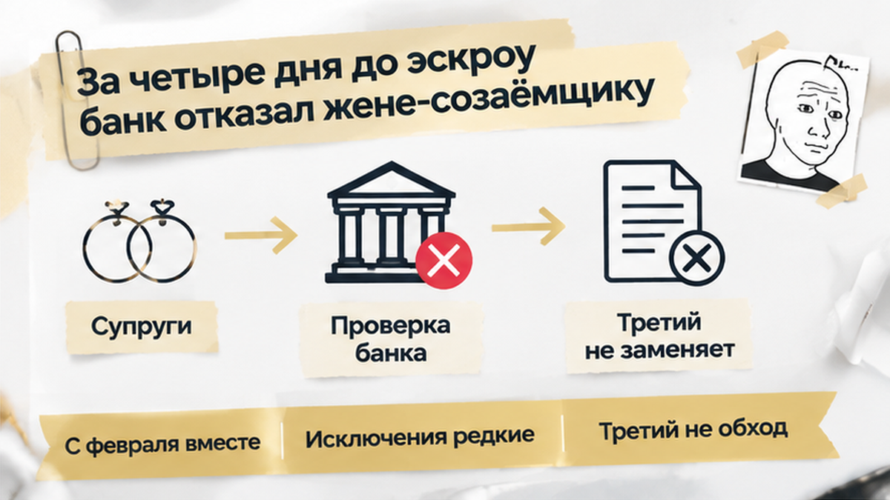
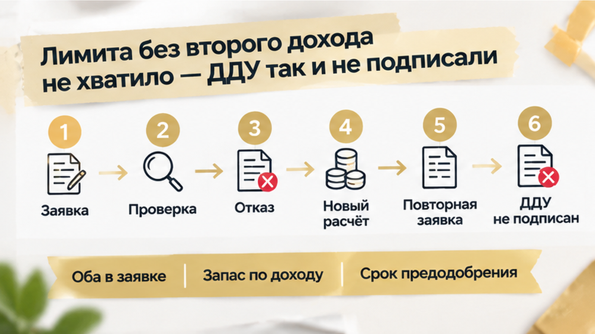
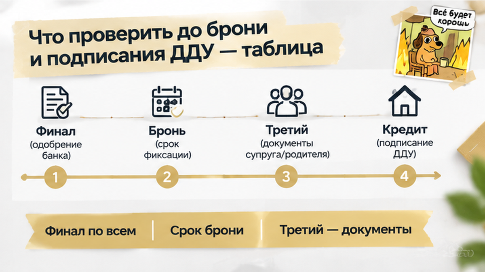

В Тюмени банк отказал жене-созаёмщику за 4 дня до открытия эскроу — покупка новостройки остановилась, хотя квартиру уже забронировали. Предварительное одобрение семья получила на двоих: муж — основной заёмщик, жена — созаёмщик. За кухонным столом считали будущий платёж и готовились к подписанию, а после звонка менеджера пришлось разбираться, дадут ли вообще нужную сумму. До конца брони оставалось шесть дней, дохода мужа для выбранной квартиры не хватало. Слова «ипотеку одобрили» уже прозвучали, но окончательную проверку прошли ещё не все.
Я Святослав Шакин, The Риэлтор, Тюмень — о новостройках и о том, что стоит выяснить до внесения денег: Telegram и MAX.

Квартиру выбрали, предварительное решение получили, бронь оформили. Дальше собирали документы к договору участия в долевом строительстве — ДДУ — и открытию счёта эскроу. Для покупателя это уже похоже на подготовку к покупке, а не на ожидание ответа банка: осталось собрать бумаги, согласовать время и приехать на подпись.
Но банк ещё проверял участников заявки. Два дохода в предварительном расчёте — не то же самое, что два человека, по которым принято окончательное решение. Кредитор смотрит документы, обязательства и кредитную историю каждого, и результат этой проверки может изменить весь расчёт.
Бронь держит квартиру, а не обещание банка выдать кредит. У застройщика идёт свой срок, у банка — своя проверка. Эти процессы могут двигаться одновременно, но один не подстраховывает другой: подготовленный договор не превращает предварительное одобрение в окончательное.
Покупатель слышит «квартира за вами» и выдыхает. Я бы здесь задал ещё один вопрос: «Банк уже подтвердил нужную сумму по всем участникам или пока продолжает проверку?» Это не придирка к словам менеджера, а разница между выбранной квартирой и сделкой, для которой действительно есть деньги.
Похожую границу разбирал в истории семейной ипотеки, которая не дошла до открытия эскроу. Там подготовка остановилась из-за маткапитала. Здесь вопрос оказался не в источнике первоначального взноса, а в человеке, чей доход учитывали при выборе квартиры.

Менеджер сообщил результат финальной проверки: банк отклонил жену-созаёмщика. Подробной подтверждённой причины нет. Приписывать ей просрочки, лишние кредиты или ошибку в справке было бы удобно для объяснения, но нечестно: известен ответ банка, а не то, на чём именно он споткнулся.
Семье от этой неизвестности не легче. Нужно понять не «кто виноват», а можно ли теперь собрать заявку на нужную сумму. Перенести встречу для подписания несложно; найти подтверждённое финансирование в оставшийся срок — совсем другая задача.
Первый понятный ход — проверить, что получится с одним доходом. Но тут два отдельных вопроса: сколько банк готов дать и кого разрешено включать в заявку. Даже достаточный доход мужа сам по себе не позволил бы просто убрать жену: супруги по семейной ипотеке должны участвовать вместе, кроме предусмотренных исключений.
Отказ этого банка не закрывает семье дорогу во все остальные. Но возможность подать новую заявку — ещё не деньги на покупку: другой кредитор тоже будет оценивать документы и участников. Пока нет его решения, обещание «попробуем ещё где-нибудь» остаётся только вариантом, а срок брони продолжает идти.
После отказа жене вопрос стал не бумажным. Встал вопрос денег: хватит ли мужу одному на выбранную квартиру.
Не хватало. Того лимита, с которым семья бронировала новостройку, без второго дохода не получалось. Предварительное решение на двоих больше не подтверждало сделку в прежнем виде.
В такой момент легко сказать: «Тогда просто уберём жену из заявки». Но семейная ипотека так не работает. Если супруги состоят в браке, их участие в заявке обязательно, кроме предусмотренных программой исключений. Поэтому достаточный доход мужа сам по себе не решал проблему.
Это разные вопросы. Первый: сколько банк может одобрить, если считать только доход одного человека. Второй: кого программа и банк должны видеть участниками кредита. Можно получить ответ по первому вопросу и всё равно не пройти по второму.
До конца брони оставалось шесть дней. Срок поджимал: квартира выбрана, пакет документов к договору участия в долевом строительстве собран, дата открытия эскроу назначена. В такой ситуации появляется опасная мысль: подписать ДДУ сейчас, а с кредитом разобраться потом.
Но подпись не добавляет к доходу недостающий лимит. И не отменяет отказ участнику заявки. Если банк ещё не подтвердил нужную сумму и состав заёмщиков, договор не превращается в одобренный кредит.
Семья решила ДДУ не подписывать. Деньги на эскроу не перечисляли. Это был неприятный поворот, но не тот, после которого уже приходится спасать подписанные обязательства.
Я всегда разделяю две вещи: готовность документов и готовность сделки. Папка с документами может лежать на столе, квартира может быть забронирована, а кредит всё ещё оставаться на финальной проверке.
В другой истории банк изменил условия перед подписанием ДДУ. Там остановиться пришлось из-за новой ставки и выросшего платежа. Здесь причина была другой: отказ обязательному участнику заявки и нехватка лимита без её дохода.
Следующим вариантом стал родитель. Не вместо жены, а третьим созаёмщиком — чтобы добавить в расчёт ещё один доход.
Такая возможность предусмотрена: дополнительным созаёмщиком может быть гражданин России, если доходов семьи не хватает. Но родственная связь не означает автоматического одобрения. Банк всё равно проверяет доходы, обязательства и кредитную историю нового участника.
Родитель проверку не прошёл. Почему именно — неизвестно. Поэтому я не стал бы объяснять отказ просрочками, долгами или ошибками в справках: это были бы догадки, а не факт из истории.
Факт был проще и жёстче: добавление родственника не решило вопрос с кредитом. Запасной вариант оказался не готовым выходом, а новой заявкой со своими сроками и рисками.
Параллельно семья обсуждала бронь с застройщиком. По его письму бронь сняли без штрафа. Именно по письму — это важно. Устное «если банк откажет, разберёмся» не даёт такого же спокойствия и не заменяет условия договора.

Для другой новостройки правила могут быть иными: удержат ли оплату за бронь, вернут ли её полностью, дадут ли продление — зависит от договора и письменных договорённостей с застройщиком.
Через 11 дней квартиру забрал другой покупатель. Семья потеряла выбранный вариант и не получила кредит по первоначальному плану. Финала с ключами здесь нет.
Но нет и другой, куда более тяжёлой развязки: ДДУ не подписали без подтверждённого финансирования, деньги на эскроу не ушли. В какой-то момент пришлось выбрать не красивую гонку за квартирой, а остановку.
А вы бы срочно искали другого созаёмщика или отказались от сделки, пока деньги не ушли на эскроу?

«Тогда оформим только на мужа» — понятная первая мысль. Но с 1 февраля 2026 года супруги в браке должны вместе участвовать в семейной ипотеке. Просто вычеркнуть жену из заявки, чтобы банк не проверял её кредитную историю и обязательства, нельзя. Основным заёмщиком должен быть родитель ребёнка.
У правила есть исключения: для военнослужащих — участников накопительно-ипотечной системы; супруга без гражданства РФ в заявку не включают. Одинокому родителю включать супруга не требуется. Для этой семьи исключения не давали возможности убрать жену, поэтому расчёт на один доход отвечал только на вопрос о бюджете.
Третьего созаёмщика — гражданина РФ — программа допускает, если доходов не хватает. Но это дополнительный участник, а не способ обойти отказ другому. Банк проверяет его документы, доходы и обязательства: приглашение родственника само по себе ничего не решает.
И ещё одно различие, которое легко потерять за словом «льготная». Условия программы — ставка до 6% годовых, взнос от 20%, льготный кредит в Тюменской области до 6 млн рублей — не обещание выдать семье всю нужную сумму. Право подать заявку есть, а решение по ней принимает конкретный банк.
В III квартале 2026 года действуют и ограничения Банка России на долю рискованных кредитов у банков. Это правила для банковского портфеля, не персональный запрет покупателю. Приписывать им отказ жене нельзя: подробной причины мы не знаем. Как нельзя по одному отказу заключать, что во всех остальных банках ответ будет таким же.

Покупатель слышит «одобрено» и начинает планировать переезд. Я в этот момент уточняю: что именно одобрено, кого ещё проверяют и до какой даты действует решение. В истории об одобренной ипотеке и остановленной регистрации препятствие было другим, но первое банковское «да» тоже не означало, что сделка готова.
| Что проверить | Что получить до следующего шага |
|---|---|
| Обоих супругов | Письменный список недостающих документов и уточнение, какие проверки ещё идут. |
| Запас по доходу | Расчёт суммы, если один доход не учтут. Обязательного супруга это из заявки не исключает. |
| Срок предодобрения | Дату окончания и условия пересмотра — сопоставить со сроком брони. |
| Бронь | Письменные условия продления, снятия, возврата оплаты и возможных штрафов при отказе банка. |
| Третьего созаёмщика | Список документов и время на проверку. Не считать его доход подтверждённым заранее. |
| Готовность к ДДУ | Финальное решение по всем участникам на нужную сумму, а не обещание закончить проверку после подписи. |
Отменить бронь и выйти из подписанного ДДУ — не одно и то же. Разницу между этапами можно увидеть в разборе остановки сделки до открытия эскроу. Обязанность оплатить цену по ДДУ исполнена, когда деньги поступили на эскроу, а последствия снятия брони нужно смотреть в своём договоре, не в чужой удачной договорённости.
Бронь уже обсуждаете, а кто прошёл проверку — непонятно? Напишите в Telegram или MAX. Помогу собрать конкретные вопросы банку и застройщику вместо общего «у нас всё нормально?».
Остаться без выбранной квартиры обидно. Но брать на себя обязательства только потому, что жалко потраченного времени, — не выход. Семья остановилась до ДДУ и эскроу, деньги сохранила: следующий вариант можно выбирать без необходимости сначала выпутываться из неподтверждённой сделки.
Я за то, чтобы пауза возникала раньше — пока обсуждаем квартиру и условия брони, а не после подписи. Тогда есть время спокойно разобрать заявку и договор, не гоняясь за датой открытия эскроу.